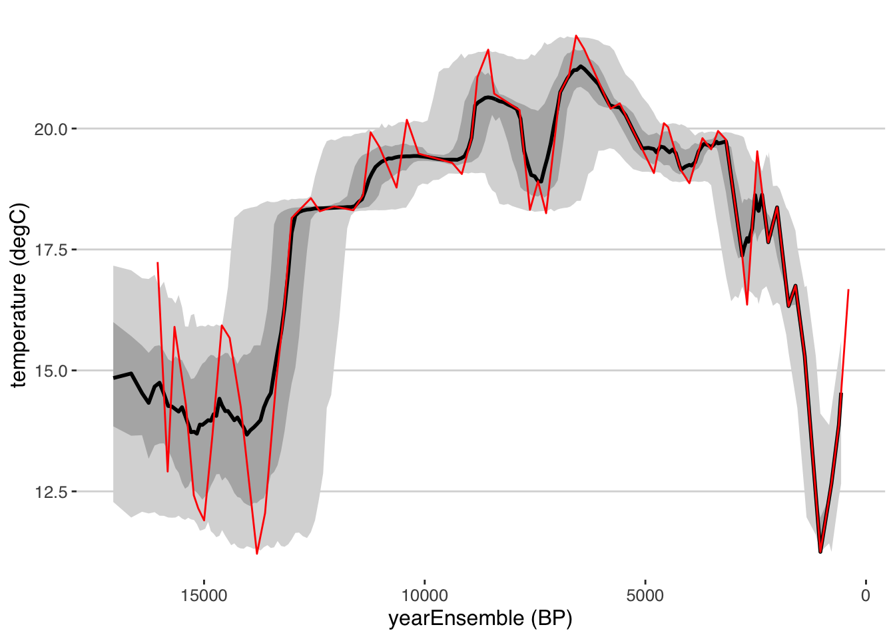

Chapter 4 Age modelling in geoChronR
geoChronR quantifies the uncertainties due to time uncertainty by taking advantage of ensembles of plausible age histories for one or more datasets. This means that often an early step in the geoChronR workflow is generating age ensembles. Most modern age modelling approaches quantify uncertainties using methods that rely on ensembles, however preserving, extracting, and storing those uncertainties for subsequent analysis can be challenging. geoChronR helps with this! In this chapter, we’ll go through the workflow of generating age models with four methods that are integrated into geoChronR
library(lipdR)
library(geoChronR)
library(ggplot2)
library(magrittr)
tana <- readLipd("https://lipdverse.org/Temp12k/1_0_2/TanaLake.Loomis.2015.lpd")## [1] "reading: TanaLake.Loomis.2015.lpd"4.1 Bacon
The Bayesian ACcumulatiON (Bacon) algorithm (M. Blaauw and Christen 2011) is one of the most broadly used age-modelling techniques, and was designed to take advantage of prior knowledge about the distribution and autocorrelation structure of sedimentation rates in a sequence to better quantify uncertainty between dated levels. Bacon divides a sediment sequence into a parameterized number of equally-thick segments; most models use dozens to hundreds of these segments. Bacon then models sediment deposition, with uniform accumulation within each segment, as an autoregressive gamma process, where both the amount of autocorrelation and the shape of the gamma distribution are given prior estimates. The algorithm employs an adaptive Markov Chain Monte Carlo algorithm that allows for Bayesian learning to update these variables given the age-depth constraints, and converge on a distribution of age estimates for each segment in the model. Bacon has two key parameters: the shape of the accumulation prior, and the segment length, which can interact in complicated ways (Trachsel and Telford 2017). In our experience, the segment length parameter has the greatest impact on the ultimate shape and amount of uncertainty simulated by Bacon, as larger segments result in increased flexibility of the age-depth curve, and increased uncertainty between dated levels. Bacon is written in C++ and R, with an R interface. More recently, the authors released an R package “rbacon” (Maarten Blaauw, Christen, and Aquino L. 2020), which geoChronR leverages to provide access to the algorithm. Bacon will optionally return a thinned subset of the stabilized MCMC accumulation rate ensemble members, which geoChronR uses to form age ensemble members for subsequent analysis.
tana <- runBacon(tana,
lab.id.var = 'LabID',
age.14c.var = 'age14C',
age.14c.uncertainty.var = 'age14CUnc',
age.var = 'age',
age.uncertainty.var = '1SD',
depth.var = 'depth',
reservoir.age.14c.var = NULL,
reservoir.age.14c.uncertainty.var = NULL,
rejected.ages.var = NULL,
accept.suggestions = TRUE)Great! If all went well Bacon ran, and geoChronR grabbed the ensembles for future use. What kind of future use? Well, let’s start with plotting.
The plotChronEns() function is great for making, quick, but pretty nice, figures to show an age model ensemble. It has a lot of options for customization (check out ?plotChronEns). Lastly, what it returns is a ggplot2 object, meaning that you can further customize it! Let’s see how it goes!
plotChronEns(tana) + ggtitle("Tana Lake - default Bacon model")## [1] "Found it! Moving on..."
## [1] "Found it! Moving on..."
## [1] "plotting your chron ensemble. This make take a few seconds..."## Scale for 'x' is already present. Adding another scale for 'x', which will replace the existing scale. That was easy! But you’ll have to explore the options to fully customize your figure.
That was easy! But you’ll have to explore the options to fully customize your figure.
Exercise 4.1 Explore the parameter choices in plotChronEns. Can you a) change the confidence interval colors and b) quantiles? c) Change the type of distribution plotted for the dates d) and their color and transparency? e) what does truncate.dist do?
4.2 BChron
BChron (Haslett and Parnell 2008; A. Parnell et al. 2008) uses a similar approach, using a continuous Markov monotone stochastic process coupled to a piecewise linear deposition model. This simplicity allows semi-analytical solutions that make BChron computationally efficient. BChron was originally intended to model radiocarbon-based age-depth models in lake sedimentary cores of primarily Holocene age, but its design allows broader applications. In particular, modeling accumulation as additive independent gamma increments is appealing for the representation of hiatuses, particularly for speleothem records, where accumulation rate can vary quite abruptly between quiescent intervals of near-constant accumulation (A. C. Parnell, Buck, and Doan 2011; Dee et al. 2015; Hu, Emile-Geay, and Partin 2017). The downside of this assumption is that BChron is known to exaggerate age uncertainties in cases where sedimentation varies smoothly (Trachsel and Telford 2017).
Bchron has several key parameters, which allow a user to encode their specific knowledge about their data.
In particular, the outlierProbs parameter is useful in giving less weight to chronological tie points that may be considered outliers, either because they create a reversal in the stratigraphic sequence, or because they were flagged during analysis (e.g. contamination).
This is extremely useful for radiocarbon-based chronologies where the top age may not be accurately measured for modern samples.
The thetaMhSd, psiMhSd, and muMhSd parameters control the Metropolis-Hastings standard deviation for the age parameters and Compound Poisson-Gamma scale and mean respectively, which influence the width of the ensemble between age control tie points.
geoChronR uses the same default values as the official Bchron package, and we recommend that users only change them if they have good cause for doing so.
tana <- runBchron(tana,
iter = 10000,
model.num = 2,
lab.id.var = 'LabID',
age.14c.var = 'age14C',
age.14c.uncertainty.var = 'age14CUnc',
age.var = 'age',
age.uncertainty.var = '1SD',
depth.var = 'depth',
reservoir.age.14c.var = NULL,
reservoir.age.14c.uncertainty.var = NULL,
rejected.ages.var = NULL)plotChronEns(tana,model.num = 2,truncate.dist = .0001) + ggtitle("Tana Lake - default Bchron model")## [1] "Found it! Moving on..."
## [1] "Found it! Moving on..."
## [1] "plotting your chron ensemble. This make take a few seconds..."## Scale for 'x' is already present. Adding another scale for 'x', which will replace the existing scale.
4.3 OxCal
The OxCal software package has a long history and extensive tools for the statistical treatment of radiocarbon and other geochronological data (Bronk Ramsey 1995).
In Bronk Ramsey (2008), age-depth modelling was introduced with three options for modelling depositional processes that are typically useful for sedimentary sequences: uniform, varve, and Poisson deposition models, labeled U-sequence, V-sequence and P-sequence, respectively.
The Poisson-based model is the most broadly applicable for sedimentary, or other accumulation-based archives (e.g. speleothems), and although any sequence type can be used in geoChronR, most users should use a P-sequence, which is the default.
Analogously to segment length parameter in Bacon, the k parameter (called eventsPerUnitLength in geoChronR), controls how many events are simulated per unit of depth, and has a strong impact on the flexibility of the model, as well as the amplitude of the resulting uncertainty.
As the number of events increases, the flexibility of the model, and the uncertainties, decrease.
Trachsel and Telford (2017) found that this parameter has a large impact on the accuracy of the model, more so than the choices made in Bacon or Bchron.
Fortunately, Bronk Ramsey et al. (2010) made it possible for k to be treated as a variable, and the model will estimate the most likely values of k given a prior estimate and the data. The downside of this flexibility is that this calculation can greatly increase the convergence time of the model.
Oxcal is written in C++, with an interface in R (Martin et al. 2018).
Oxcal does not typically calculate posterior ensembles for a depth sequence, but can optionally output MCMC posteriors at specified levels in the sequence.
geoChronR uses this feature to extract ensemble members for subsequent analysis.
tana <- runOxcal(tana,model.num = 3,
lab.id.var = 'LabID',
age.14c.var = 'age14C',
age.14c.uncertainty.var = 'age14CUnc',
age.var = 'age',
age.uncertainty.var = '1SD',
depth.var = 'depth',
reservoir.age.14c.var = NULL,
reservoir.age.14c.uncertainty.var = NULL,
rejected.ages.var = NULL,
events.per.unit.length = .05,
depth.interval = 20)## Oxcal is installed but Oxcal executable path is wrong. Let's have a look...## Oxcal path set!## [1] "Found it! Moving on..."
## [1] "Found it! Moving on..."
## Looking for age uncertainty
## No variable called sd, or choosing is enforced (always.choose = TRUE)
## Looking for laboratory ID
## [1] "Found it! Moving on..."
## Looking for radiocarbon ages
## [1] "Found it! Moving on..."
## Looking for 1-sigma radiocarbon age uncertainty (+/-)
## [1] "Found it! Moving on..."
## Looking for calibrated/calendar ages
## [1] "Found it! Moving on..."
## Looking for 2-sigma calibrated age uncertainty (+/-)
## [1] "Found it! Moving on..."
## Looking for depth or position
## [1] "Found it! Moving on..."
## Looking for radiocarbon reservoir age offsets (deltaR)
## radiocarbon reservoir age offsets (deltaR) does not seem to exist, moving on.
## Looking for radiocarbon reservoir age offsets (deltaR) uncertainties
## radiocarbon reservoir age offsets (deltaR) uncertainties does not seem to exist, moving on.
## Looking for rejected ages
## rejected ages does not seem to exist, moving on.
## [1] "Variable choices for reuse..."
## For future reference: here are the options you chose:
## Find later with getLastVarString()
## lab.id.var = 'LabID', age.14c.var = 'age14C', age.14c.uncertainty.var = 'age14CUnc', age.var = 'age', age.uncertainty.var = '1SD', depth.var = 'depth', reservoir.age.14c.var = NULL, reservoir.age.14c.uncertainty.var = NULL, rejected.ages.var = NULL,
## Oxcal is now running, depending on your settings and your computer, this may take a few minutes to several hours. The model is complete when a table of model diagnostics appears.plotChronEns(tana,model.num = 3,truncate.dist = .0001) + ggtitle("Tana Lake - Oxcal model")## [1] "Found it! Moving on..."
## [1] "Found it! Moving on..."
## [1] "plotting your chron ensemble. This make take a few seconds..."## Scale for 'x' is already present. Adding another scale for 'x', which will replace the existing scale.
4.3.1 Let’s compare these models.
First, lets use selectData() to pull the depth and ageEnsemble variables for each model. The selectData() function is introduced in section .
ensBacon <- selectData(tana,
var.name = "ageEnsemble",
paleo.or.chron = "chronData",
model.num = 1,
table.type = "ensemble")
depthBacon <- selectData(tana,
var.name = "depth",
paleo.or.chron = "chronData",
model.num = 1,
table.type = "ensemble")
ensBchron <- selectData(tana,
var.name = "ageEnsemble",
paleo.or.chron = "chronData",
model.num = 2,
table.type = "ensemble")
depthBchron <- selectData(tana,
var.name = "depth",
paleo.or.chron = "chronData",
model.num = 2,
table.type = "ensemble")
ensOxcal <- selectData(tana,
var.name = "ageEnsemble",
paleo.or.chron = "chronData",
model.num = 3,
table.type = "ensemble")
depthOxcal <- selectData(tana,
var.name = "depth",
paleo.or.chron = "chronData",
model.num = 3,
table.type = "ensemble")Now that we have all the data extracted, we can use the plotTimeseriesEnsRibbons() function to plot each of the modeled age-depth relationships and their uncertainties. We will use the magrittr “pipe” function %>% to pass the output of one plot into the next to build up a complex figure. We’ll also use different colors and transparencies so we can distinguish the different models.
plotTimeseriesEnsRibbons(X = ensBacon,Y = depthBacon) %>%
plotTimeseriesEnsRibbons(X = ensBchron,Y = depthBchron,
alp = .7,
color.high = "DarkGreen",
color.line = "Green") %>%
plotTimeseriesEnsRibbons(X = ensOxcal,Y = depthOxcal,
alp = .7,
color.high = "DarkBlue",
color.line = "Blue") %>%
plotModelDistributions(tana,add.to.plot = .) + #here we use the ggplot +
scale_y_reverse() All geoChronR plotting functions return ggplot2 objects, so we can modify the scale by adding a layer using
All geoChronR plotting functions return ggplot2 objects, so we can modify the scale by adding a layer using + using the ggplot2 model.
Exercise 4.2 Where do the models agree? Where do they differ? Do you think one is better than the others?
After you’ve answered, click for next step
The OxCal model is considerably more flexible than the Bacon model, which leaves outliers off the main trend. If you wanted to make the OxCal model less flexible, which parameter(s) would you change? Alternatively, if you wanted to make the Bacon model more flexible, which parameter(s) would you change in the Bacon model?
Try making a change to parameters in either Bacon or OxCal to make the models more similar (note, Bacon runs much faster, so I’d probably try that one first)
Finally, how should you decide whether a more or less flexible model is better?4.3.2 Creating a multimodel ensemble
Sometimes, there are good reason to believe that because of it’s design, or underlying assumptions, one model may be superior to the others, in which case you should choose that model. However, frequently, it’s unclear which model to choose, or to objectively pick on model over another. In this case, you might want to create a multimodel ensemble that incorporates model structural uncertainty into your uncertainty structure. This is pretty straightforward in geoChronR.
Here, we’ll create a fourth model that combines these three into a “Grand Ensemble” using createMultiModelEnsemble
tana <- createMultiModelEnsemble(tana,
models.to.combine = 1:3,
depth.interval =10,
n.ens = 1000)## [1] "Found it! Moving on..."
## [1] "Found it! Moving on..."Hint #1
First plot the chronEns, then use the “add.to.plot” parameter to add in the distributions.Hint #2
Something with this structure is what you’re looking for
plotChronEns() %>% plotModelDistributions()Exercise 4.4 Now that you’ve got plotting working, try changing the choices made in createMultiModelEnsemble. Specifically, what is the impact of changing, depth.interval, n.ens, or depth.sequence? Use the documentation for help!
Exercise 4.5 Add your final multi model ensemble to the figure that showed the three original age models above. Does it look like a combination of the three?
4.3.3 Mapping the age ensemble to the paleoData measurements
Great, our LiPD file now has an age ensemble (actually 4 age ensembles!) that we can use in subsequent analysis. We could write out our LiPD file right now using lipdR::writeLipd(tana), for future work, or share with a colleague, and when we load it back in, all of our ensembles will be there, ready to go!
But for now, let’s think about the next step in our analysis. We want to look at our paleoenvironmental data in the context of the age uncertainties. So let’s take a look at the paleoData!
#First, create a tibble from the paleoata
paleo <- extractTs(tana) %>% ts2tibble()
#Now you can explore that much more easily - here are all the variable names in all the measurementTables in the paleoData.
paleo$paleoData_variableName## [1] "core" "year" "age" "Section" "Composite_depth" "temperature" "error"
## [8] "depth" "Ti" "dDwax" "dDwax Corrected" "dD error" "d13Cwax" "d13C Error"
## [15] "age" "depth"It looks like depth in this dataset is “Composite_depth,” and the median age vector is here, but the age ensemble is not! Why not? Well, the ensemble chronology in a model may or may not have values corresponding to the paleoclimatic or paleoenvironmental measurements in paleoData. Each of our models have different depth scales, and they’re all different than our paleoclimate data. So we need to “map” the model ensemble values to a measurement table in paleoData, so we can estimate the age uncertainty on each value. To do this we use the mapAgeEnsembleToPaleoData() function.
tana <- mapAgeEnsembleToPaleoData(tana,
age.var = "ageEnsemble",
model.num = 4,
paleo.depth.var = "Composite_depth",
paleo.meas.table.num = 1)Now let’s look at the paleoData again:
paleo <- extractTs(tana) %>% ts2tibble()
paleo$paleoData_variableName## [1] "core" "year" "age" "Section" "Composite_depth" "temperature" "error"
## [8] "ageEnsemble" "depth" "Ti" "dDwax" "dDwax Corrected" "dD error" "d13Cwax"
## [15] "d13C Error" "age" "depth"Great, now we have an ageEnsemble variable in our paleoData (and our tibble!)
4.3.4 Creating a timeseries plot as a spaghetti plot of lines
Let’s visualize the reconstructed temperature with age uncertainties.
First, we’ll use selectData() again to get our mapped ensemble and temperature data:
tana.ae <- selectData(tana,var.name = "ageEnsemble",meas.table.num = 1)## [1] "Found it! Moving on..."tana.temp <- selectData(tana,var.name = "temperature",meas.table.num = 1)## [1] "Found it! Moving on..."OK, we’re ready to plot it. There are a few ways to visualize ensemble data. The simplest is to just plot multiple instances of the line. Here we will just plot the temperature data against 50 random ensemble members.
tana.ts.plot <- plotTimeseriesEnsLines(X = tana.ae,Y = tana.temp,alp = 0.05,n.ens.plot = 50,color = "blue")
print(tana.ts.plot)
Exercise 4.6 plotTimeseriesEnsLines() has options that control the output. Take a look at the documentation, and then change the following parameters, and understand how that affects the output:
- alp
- color (What does “Blues” or “Set2” do? How does it work)
- n.ens.plot
- Change the limits of the plot to only show the Holocene (~12,000-0 yr BP)
Hint
To change the limits, you’ll use the xlim() or scale_x_reverse() functions from ggplot2
4.3.5 Creating a timeseries plot with a ribbon confidence intervals
We can also plot this as a ribbon plot of quantiles
tana.ribbon.plot <- plotTimeseriesEnsRibbons(X = tana.ae,Y = tana.temp)
print(tana.ribbon.plot)
Exercise 4.6 plotTimeseriesEnsRibbons () has many more options that control the output. Take a look at the documentation for that function, and then change the following parameters, and understand how that affects the output:
- probs
- color.high
- n.bins
- export.quantiles
- limit.outliers.x
4.3.6 Combining the two kinds of timeseries plots
Each of these approaches to age-uncertain timeseries visualization is valuable - ribbons show case the probability distributions of the data through time, given the ensembles, but tend to smooth out real variability recorded by the data. Plotting an ensemble of lines highlights this variability, but gets messy with many lines, or doesn’t showcase the true range of uncertainty with a few lines.
At different times, either approach can be right, but our favorite, standard approach is to do both, using the add.to.plot option we used above.
Hint
Something with this structure is what you’re looking for
plotTimeseriesEnsRibbons() %>% plotTimeseriesEnsLines()4.4 Banded Age Modelling
Thus far, we’ve explored methods to derive, transfer, and visualize age models derived from age-depth observations (mostly radiocarbon data). geoChronR also includes another type of age modelling algorithm, that estimates uncertainties based on miscounting rates in layer-counted archives. Consequently, BAM does not require, or even consider, depth in its uncertainty quantification. Although BAM is intended for layer-counted archives, like corals or varves, it can be useful as a rough approximation of age-uncertainty in non-banded timeseries, where the original geochronologic data needed to create a proper age model are not available. We’ll explore this with Tana Lake dataset and see how it compares.
Comboul et al. (2014) is a probabilistic model of age errors in layer-counted chronologies. The model allows a flexible parametric representation of such errors (either as Poisson or Bernoulli processes), and separately considers the possibility of double-counting or missing a band. The model is parameterized in terms of the error rates associated with each event, which are intuitive parameters to geoscientists, and may be estimated via replication (DeLong et al. 2013). In cases where such rates can be estimated from the data alone, an optimization principle may be used to identify a more likely age model when a high-frequency common signal can be used as a clock (Comboul et al. 2014). As of now, BAM does not consider uncertainties about such parameters, representing a weakness of the method. BAM was coded in MATLAB, Python and R, and it is this latter version that geoChronR uses.
tana <- runBam(tana,
paleo.meas.table.num = 1,
n.ens = 1000,
model.num = 5,
make.new = TRUE,
ens.table.number = 1,
model = list(name = "poisson",
param = 0.05,
resize = 0,
ns = 1000))## [1] "Found it! Moving on..."tana.ye <- selectData(tana,var.name = "yearEnsemble",meas.table.num = 1)## [1] "Found it! Moving on..."tana.ae.bam <- convertAD2BP(tana.ye)
tana.ribbon.plot.bam <- plotTimeseriesEnsRibbons(X = tana.ae.bam,Y = tana.temp)
#we can compare this to the original age model supplied by the paper (which used the Heegaard et al., 2005 model, so a whole other approach)
tana.orig.age <- selectData(tana,var.name = "age",meas.table.num = 1)## [1] "Found it! Moving on..."tana.ribbon.plot.bam <- tana.ribbon.plot.bam +
geom_line(aes(x = tana.orig.age$values, y = tana.temp$values),color = "red")
tana.ribbon.plot.bam
library(egg)
ggarrange(plots = list(tana.ribbon.plot + xlim(c(15000,0)) + ggtitle("Temperature on Multimodel age model"),
tana.ribbon.plot.bam + xlim(c(15000,0)) + ggtitle("Temperature on BAM")),
nrow = 2)## Scale for 'x' is already present. Adding another scale for 'x', which will replace the existing scale.
## Scale for 'x' is already present. Adding another scale for 'x', which will replace the existing scale.
4.5 Chapter project.
This chapter covers a range of age modelling approaches, how to implement them in geoChronR, how to propagate the uncertainties to data of interest, and visualization of all of the above. Now it’s time to test what you’ve learned!
In addition to a temperature reconstruction, the Tana Lake dataset includes \(^{18}\)O from leaf waxes. The data are measured on a different samples at different resolution, and so are stored in a different measurement table. So your project is: